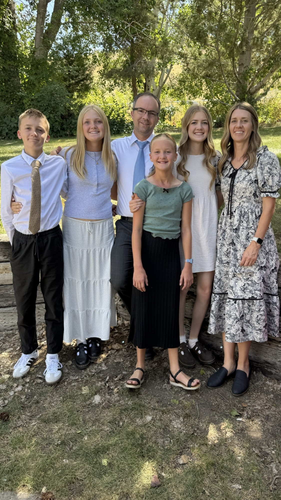
Here is a recent picture of my family!
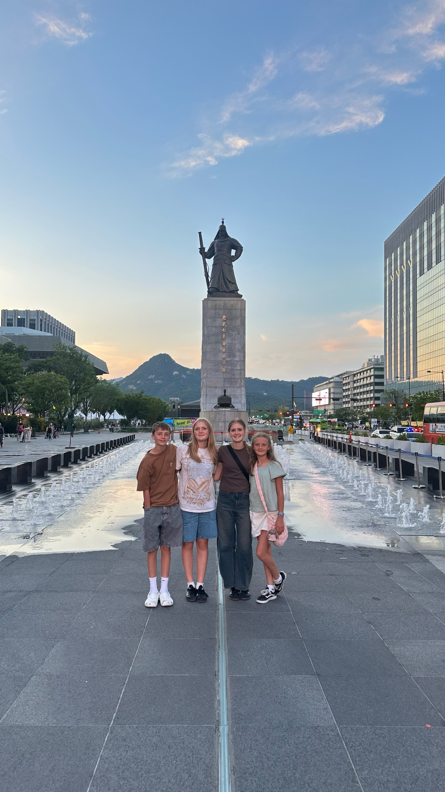
A more recent picture of my siblings and me. This was taken in South Korea!
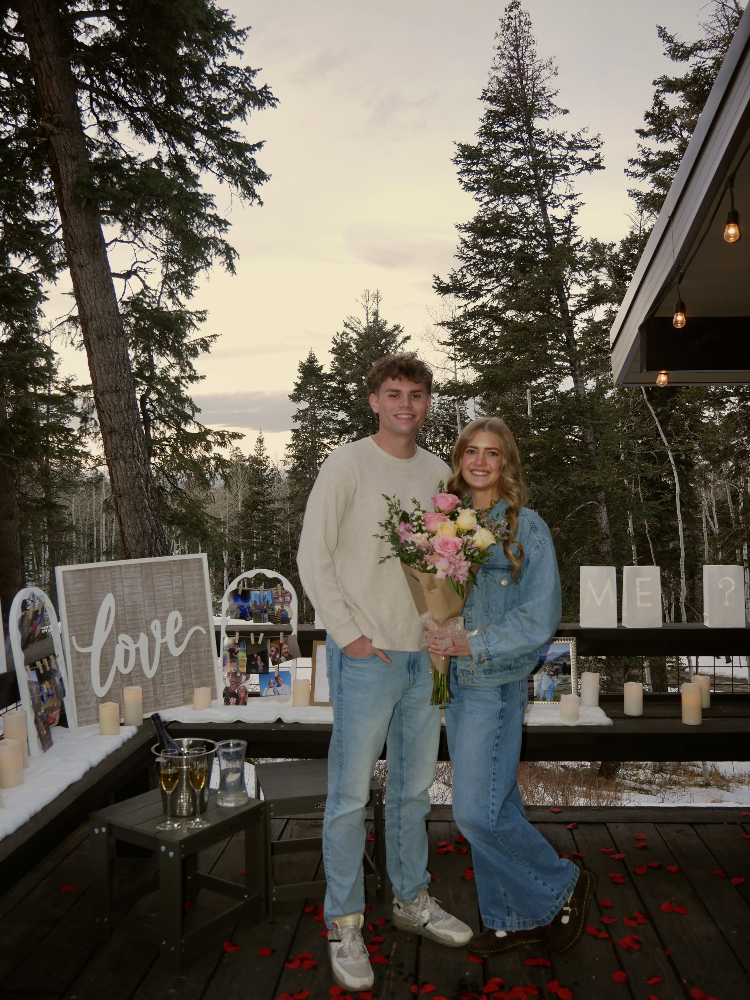
This is my fiancé Jaxon and me when we got engaged!
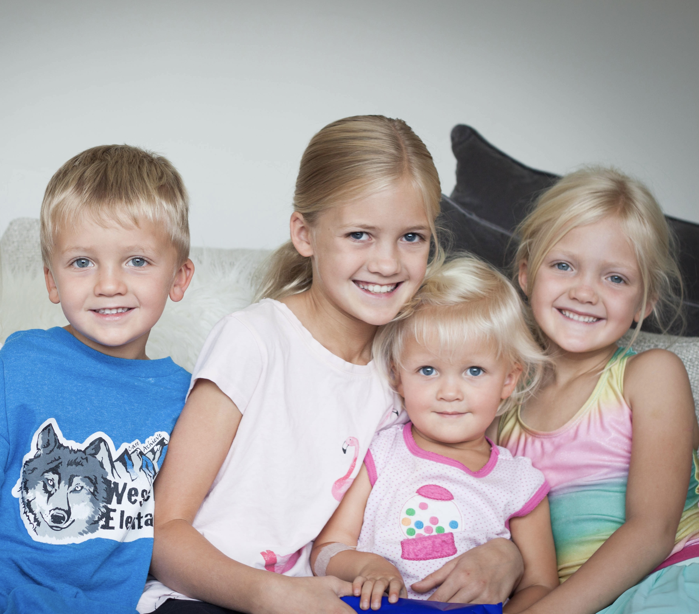
My siblings and me when we were younger. I am the oldest of four kids!
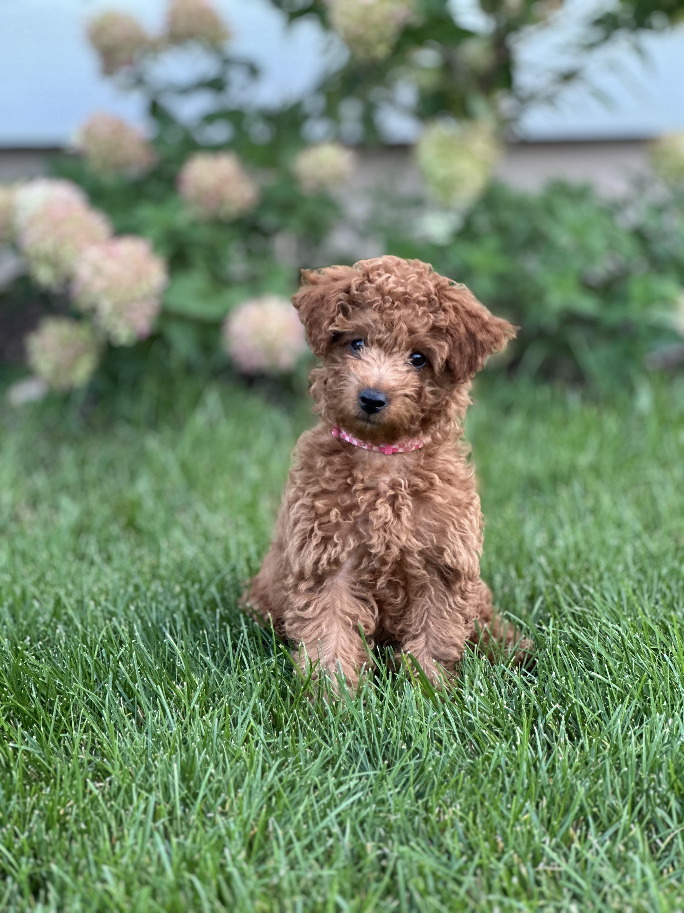
My dog Rue as a puppy. She is a micro goldendoodle and I am obsessed with her!
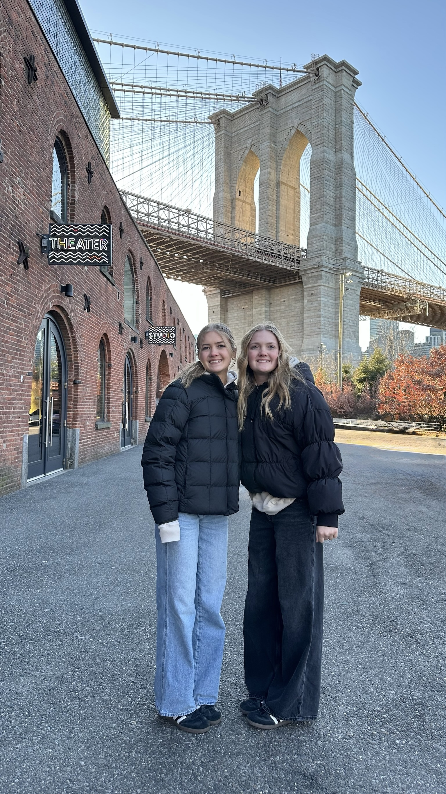
My sister Addie and me visiting NYC. We actually lived in Manhattan when we were both little!
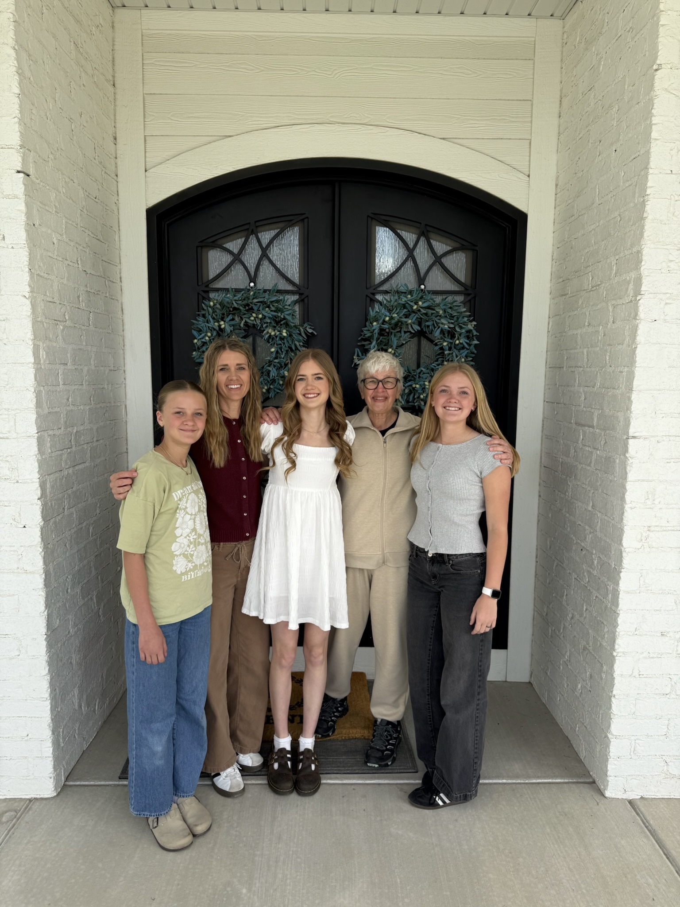
Me, my two sisters, my mom, and my grandma!
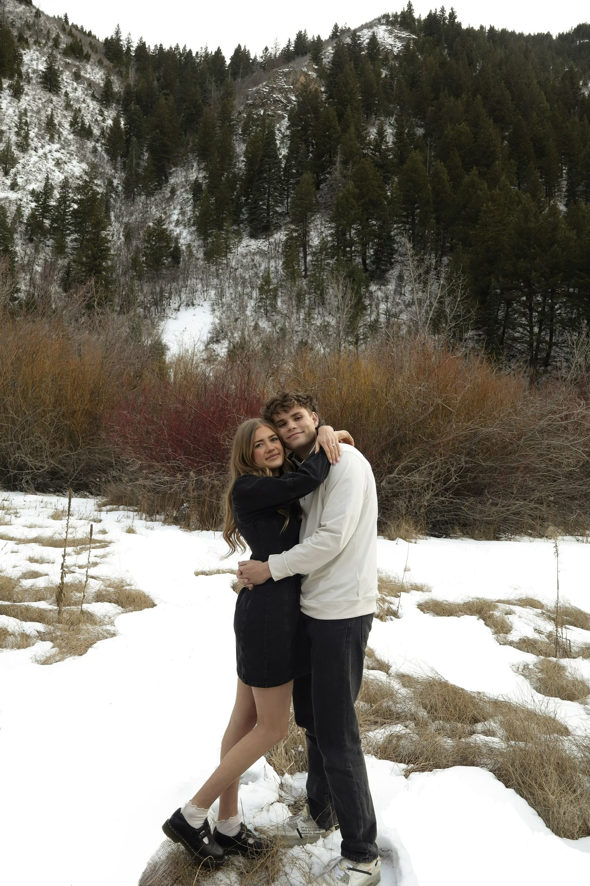
Jaxon and I. We get married on May 6th!
Me during my senior year of high school. I did cheer all three years and loved it!
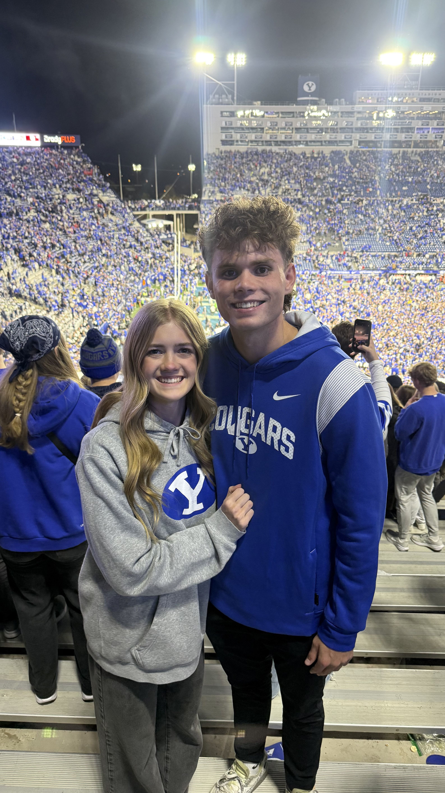
Jaxon and me at the BYU vs. Utah game last year. Go Cougs!
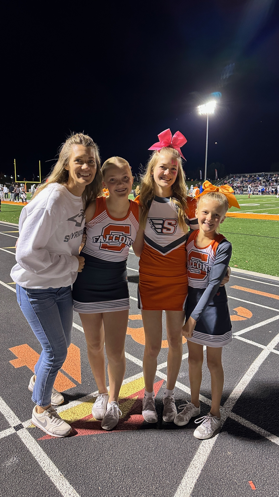
My sisters and I all did cheer at the same time. This was taken after a halftime where we all performed together!

I graduated from Skyridge High School!
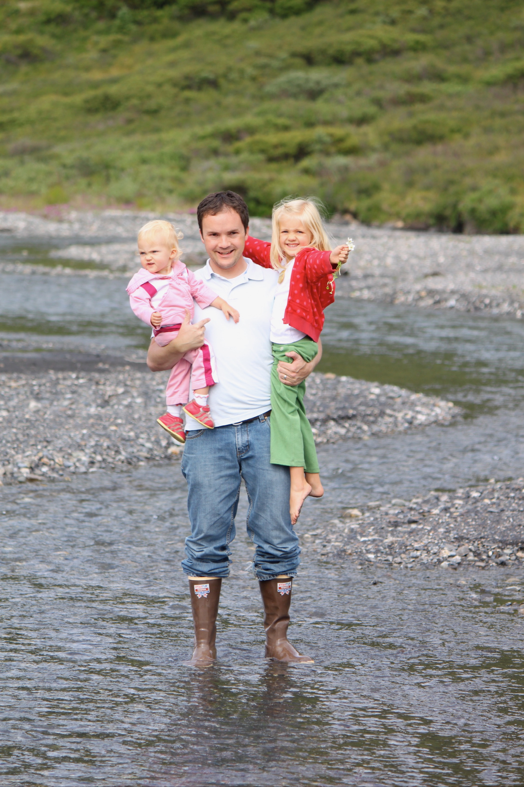
This is my dad and my sister Addie. He makes all of our vacations possible!
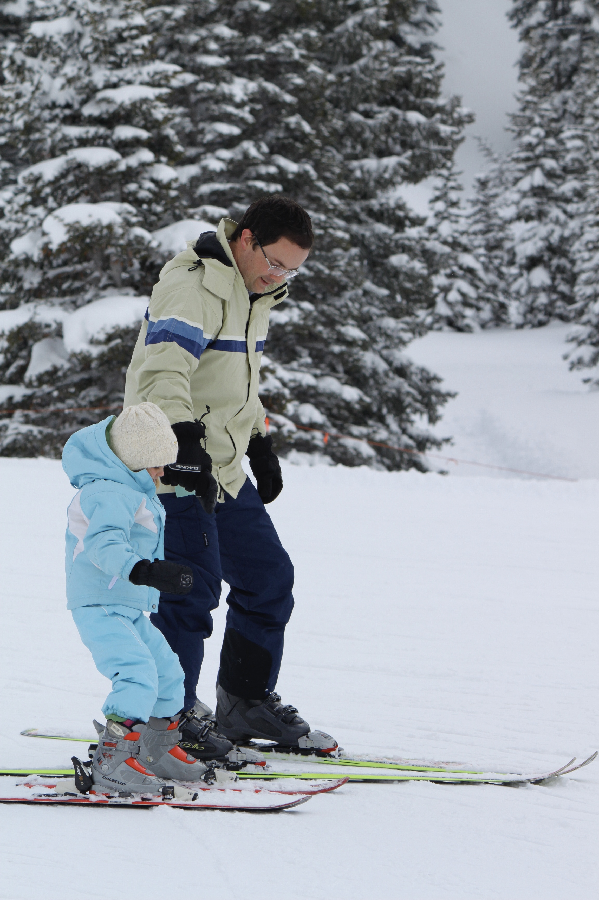
My family loves to ski, and this is my dad teaching me when I was four years old!

I was so excited to be accepted into BYU!

My senior year along with the rest of the seniors on my cheer team on senior night!